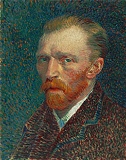
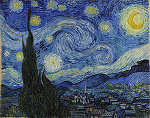
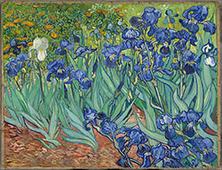
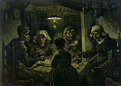
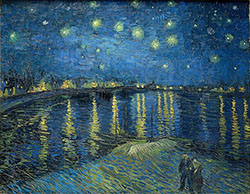
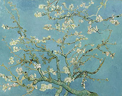

This is a webpage that emulates my interest in one of the most influential artists in Western art history while showcasing his most famous works and some of my personal favorites of his. His fascinating life and legacy is why he is one of my favorite artists.
Vincent van Gogh was a Dutch Post-Impresssionist painter born on March 30, 1853 and passed away on July 29, 1890. His artworks comprised of landscapes, still lifes, portraits, and self-portraits.
van Gogh's pieces often reflected his mental state. This led many people to consider him insane and a failure during his lifetime. His fame and legacy followed only after his suicide at 37 years old due to his severe depression and poverty. Rather than being considered a madman, he was regarded as a misunderstood genius with a turbulent mind. While he was commercially unsuccessful during his life, his legacy allowed his works to flourish and become known worldwide. His art is now revered and appreciated.
"Art is to console those who are broken by life. " - Vincent van Gogh
| "Starry Night" | "Starry Night" Background Info |  |
|---|---|---|
| "Irises" | "Irises" Background Info |  |
| "The Potato Eaters" | "Potato Eaters" Background Info |  |
| "Starry Night Over the Rhône" | "Starry Night Over the Rhône" Background Info |  |
| "Almond Blossoms" | "Almond Blossoms" Background Info |  |
Email: dgundala@emailme.com
Phone: 123-456-7890